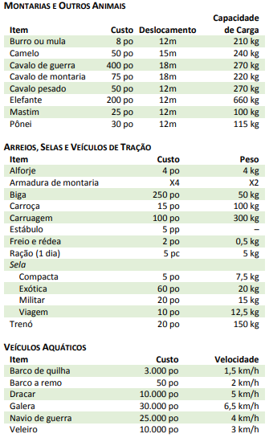

MONTARIAS E VEÍCULOS
Uma boa montaria pode ajudar você a mover-se mais rapidamente através de áreas selvagens, mas seu objetivo principal é carregar os equipamentos que o deixariam mais lento. A tabela Montarias e Outros Animais mostra o deslocamento de cada animal e sua capacidade de carga básica.
Um animal puxando uma carruagem, carroça, biga, trenó ou vagão pode carregar um peso equivalente a até cinco vezes sua capacidade de carga básica, incluindo o peso do veículo. Se vários animais puxarem o mesmo veículo, eles podem somar sua capacidade de carga.
Um animal puxando uma carruagem, carroça, biga, trenó ou vagão pode carregar um peso equivalente a até cinco vezes sua capacidade de carga básica, incluindo o peso do veículo. Se vários animais puxarem o mesmo veículo, eles podem somar sua capacidade de carga.
Armadura de Montaria. Projetada para proteger a cabeça, pescoço, tórax e o corpo do animal. Qualquer tipo de armadura mostrada na tabela Armadura nesse capítulo pode ser comprada para montaria. O custo é quatro vezes maior que a armadura equivalente feita para humanoides e possuem o dobro do peso.
Sela. Uma sela militar prende o cavaleiro, ajudando-o a se manter-se sentado em sua montagem durante uma batalha. Ela concede vantagem em qualquer teste que você fizer para manter-se montado. Uma sela exótica é necessária para montar qualquer montaria aquática ou voadora.
Proficiência com Veículos. Se você possuir proficiência com um certo tipo de veículo (terrestre ou aquático), você pode adicionar seu bônus de proficiência em qualquer teste que fizer para controlar esse tipo de veículo em circunstâncias difíceis.
Embarcações a Remo. Barcos de quilha e barcos a remo são usados em lagos e rios. Se eles estiverem a favor da corrente, o deslocamento da corrente (tipicamente 5 km/h) é adicionado ao deslocamento do barco. Esses veículos não podem ser remados contra qualquer correnteza mais forte, mas podem ser puxados por animais de tração nas margens. Um barco a remo pesa 45 kg, no caso dos aventureiros desejarem carregá-lo sobre a terra.
